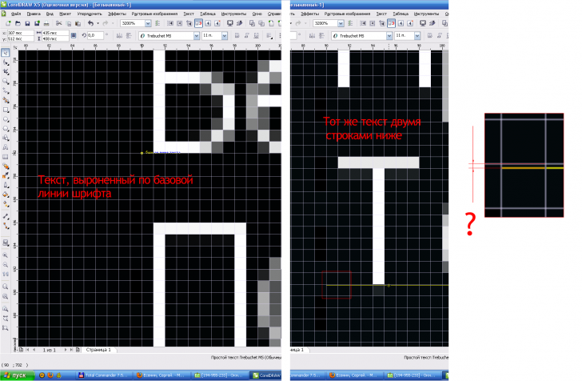

Подогнать абзац текста под пиксели
Zigzain / 20.12.2010, 16:53/00:41
Форум:
Подгоняю базовую линию шрифта начальной строки под пиксели, при этом двумя строками ниже наблюдается смещение, даже если сделать текст веб совместимым.
Как подогнать абзац текста под пиксели?

Это свойство шрифта -- когда переведёшь шрифт в кривые --всё будет ровно...
...
Изменить межстрочный интервал.
п.с. а "веб совместимым" это где?
Make text web-compatible если не ошибаюсь на англ. При клике на обычный текст в выпадающем меню есть кнопка.
Sancho, подскажите как сделать межстрочный интервал именно в пикселях и указать его точно?
Мне сейчас некогда расписывать. Вот всё есть в поиске
А по поводу web compatible. А ты знаешь за что отвечает эта функция то?
я использую ее для выравнивания текста. Как понимаю, при ее использовании применяется "дефолтный" веб-кернинг.
Пиксели так и не нашел. Пункты, миллиметры, проценты, но не пиксели.
Режим веб-совместимости нужен лишь для того, что бы текст остался редактируемым текстом при экспорте в html, а не преобразовывался в растр. Ни на какой веб-кернинг он не влияет. Что это вообще такое, веб-кернинг?
Используй Pt.
Когда параметр tracking в веб-редакторе равен нулю. Если кернинг изменен вручную, то преобразовав текст в веб-совместимый мы будем видеть именно то, как он будет отображаться в браузере. Плохо, что подобное преобразование не действует на межстрочное расстояние и шрифты не попадающие в пиксели при экспорте размазываются.
Нет такого понятия как веб-кернинг. Кернинг есть кернинг, а трекинг это трекинг, и не нужно их путать.
Говоря об отображении обычного текста в CorelDRAW и готового, свёрстанного, на html страничке, стоит заметить что 100% попадания в любом случае не будет. Т.к. за отображение шривтов в браузерах отвечает система, а системы бывают разные и настройки у всех разные. )))
ну если вам надо прям кровь из носу попасть в пиксели (зачем это надо? все равно никто не оценит ваши труды), то попробуйте воспользоваться шейп-тулом, это который треугольник после стрелки :) ну хэлп там почитайте по ней :)
или в параграф форматтинге в окошке размера интерлиньяжа поставьте курсор между стрелок чтоб он стал палкой и нажав кнопку двигайте вверх и вниз и подгоняйте нужный интервал.
Страницы